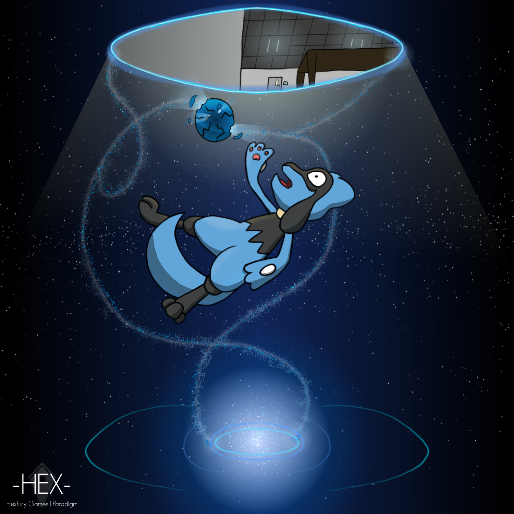
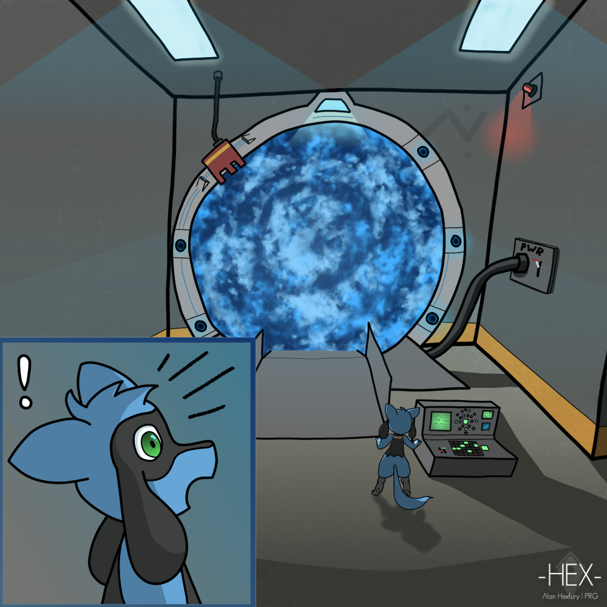
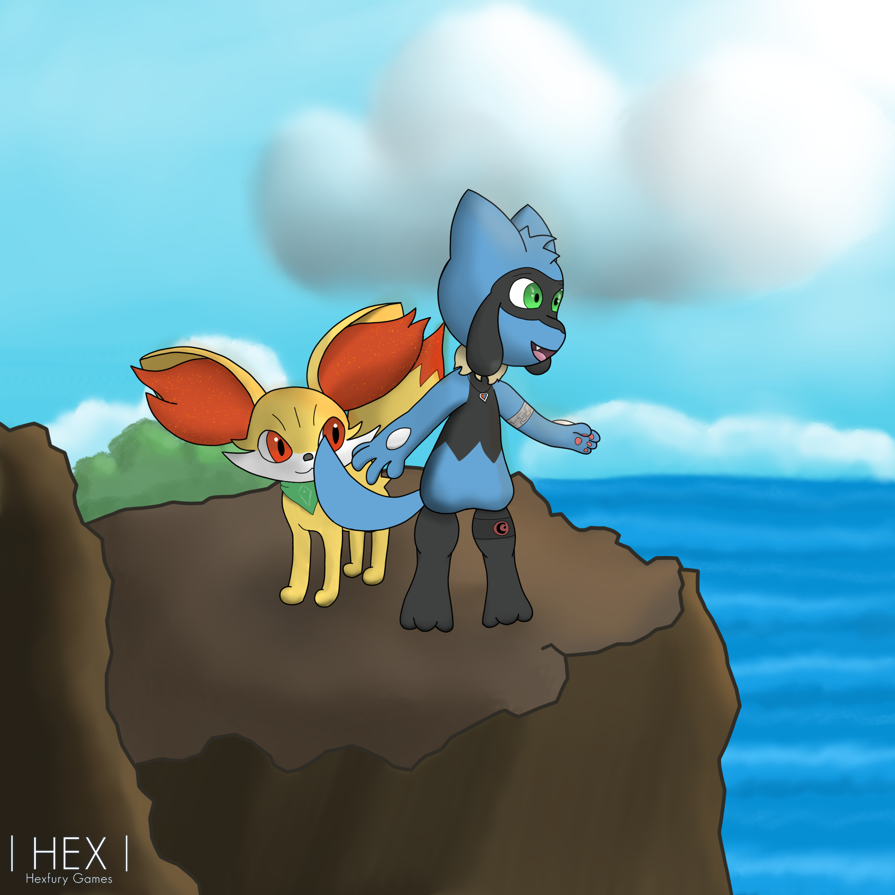

.__________________________________________________.
| |
| ~ THE CHRONICLE OF ARTIFICER HEXFURY ~ |
| |
| "Herein lies the account of works, spells, |
| and craft from the digital ether..." |
|__________________________________________________|
Artisan of Lua, Weaver of Web-Scrolls, and Mender of Silicon Beasts
The Tale | Great Works | Manuscripts | Send Courier | [ Return to Modern Realm ]
It is written that in the early epochs of my journey, I did wander the low-level plains of Lua scripting. There, I wove complex logic to animate virtual worlds, established administrative structures, and guarded the stability of large-scale interactive engines. Over seasons, my curiosity drove me to master the art of QA testing, searching for cracks and faults in grand software architectures before they could plague the realm.
Yet the digital arts do not end in virtual code alone. I have laid hands upon the very core of physical beasts, assembling and repairing PC hardware systems to breathe life back into cold silicon. In the present age, I direct my craft toward the creation of web-scrolls—designing responsive, elegant interfaces that bridges the gap between ancient, low-spec screens and modern computing chambers.
Throughout my journeys, I have forged several notable tools and worlds:
Here are captured illustrations of my visions, crafted using tools like Krita, Photoshop, and Illustrator:

"Hex the Riolu, cast through an anomalous rift of deep blue light."

"Activating an ancient stone portal of stars."

"Overlooking the boundless ocean from a rocky precipice."
Should you wish to send a message across the digital ether or examine my spells, you may follow these paths:
Written in the Year 2026. This scroll is HTML 2.0 compliant.